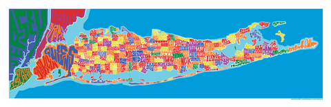

Getting to know me...
Born & raised:
Long Island, New York
Interests & Hobbies
I am a very active person and ironically love to cook and bake. My main interests include traveling, running, cooking, baking, hiking and yoga. I adopted a black lab/pit mix, whom I named Charlie, a year and a half ago. Charlie is the love of my life and I often question who rescued whom. She is most likely always by my side, whether it be relaxing or taking long walks outside.
Educational Experiences
I graduated Fordham University, Gabelli School of Business in May 2015 with a bachelor's degree in Accounting Information Systems. While at Fordham, I had the opportunity to study in London, England during the Fall of 2013. In that time I was able to explore the culture and business of the UK. In my free time, I took advantage of traveling to many different countries and cities throughout Europe.
Fun Facts
One of the quirkiest things about me is my disgust towards purple. There is no rhyme or reason to it, but I do not own, wear, and try to avoid touching anything purple.
Social Media
For any questions, comments, and/or concerns, contact me through any of the links below!